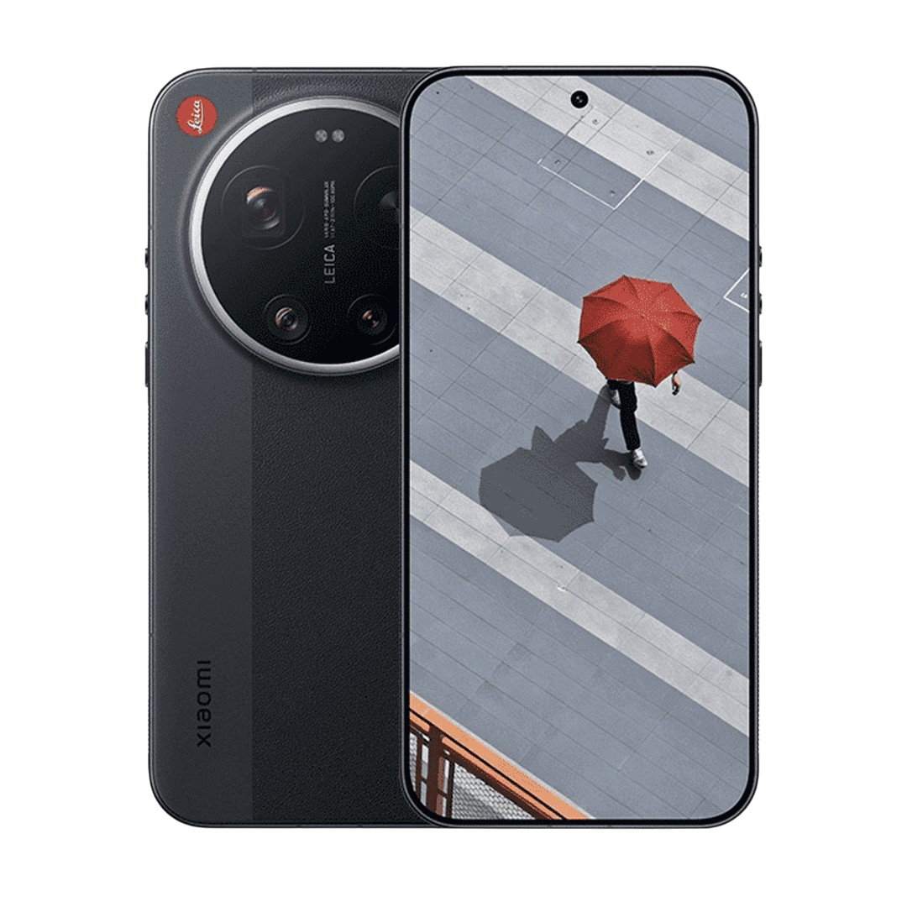

Характеристики телефона Xiaomi 17 Ultra

Флагман Xiaomi, созданный с особым вниманием к мобильной фотографии. Оснащён оптикой Leica, крупным основным сенсором и 200-мегапиксельным телеобъективом.
Дисплей: 6,9″ Xiaomi HyperRGB OLED, разрешение 2608 × 1200 пикселей, частота обновления 1–120 Гц, яркость до 3500 нит.
Процессор: Qualcomm Snapdragon 8 Elite Gen 5 (3 нм).
Память: 16 ГБ + 512 ГБ / 16 ГБ + 1 ТБ
Основная камера: 50 МП Light Fusion 1050L с сенсором формата 1″ и оптической стабилизацией.
Cверхширокоугольная камера: 50 МП с углом обзора 115°.
Перископический телефотообъектив: 200 МП с оптической стабилизацией и переменным фокусным расстоянием 75–100 мм.
Зум: до 120-кратного цифрового увеличения.
Фронтальная камера: 50 МП с автофокусом.
Видеосъёмка: до 8K при 30 кадрах/с, 4K при 120 кадрах/с, Dolby Vision и профессиональная запись Log.
Аккумулятор: 6000 мА·ч.
Зарядка: USB-C, 90 Вт проводная HyperCharge, 50 Вт беспроводная HyperCharge.
Защита: IP68, стекло Xiaomi Shield Glass 3.0.
Дополнительные возможности: оптика Leica Summilux, Leica Authentic Look, Leica Vibrant Look, ультразвуковой сканер отпечатков пальцев, ИК-порт, стереодинамики Dolby Atmos.
Операционная система: Xiaomi HyperOS 3.
Посмотреть характеристики других моделей:
Примечание по характеристикам: данные соответствуют опубликованным спецификациям моделей на 2026 год. Некоторые конфигурации памяти и параметры зарядки могут отличаться в зависимости от рынка.
Характеристики брались с данного источника (кликабельно): Xiaomi